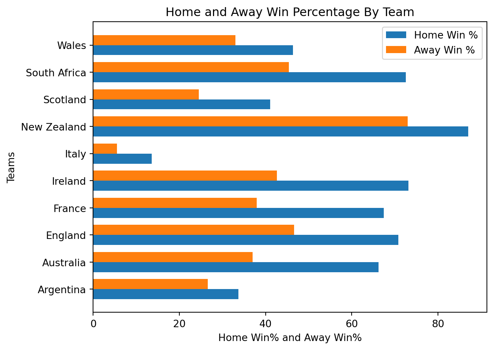
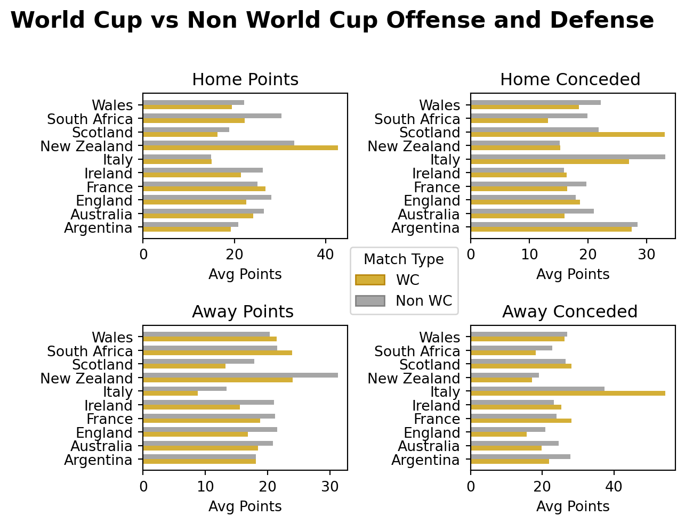
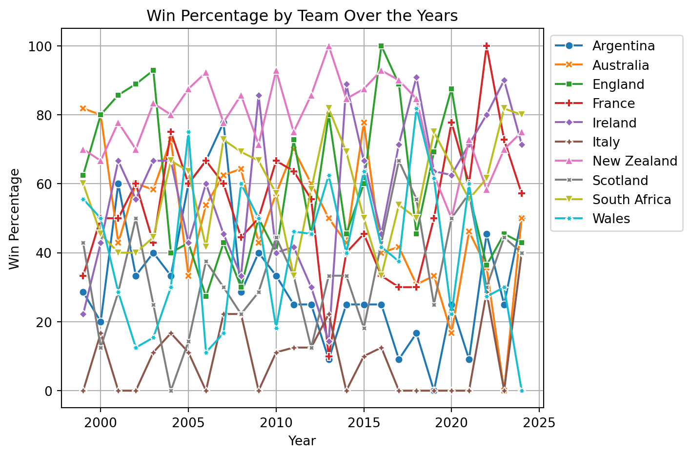
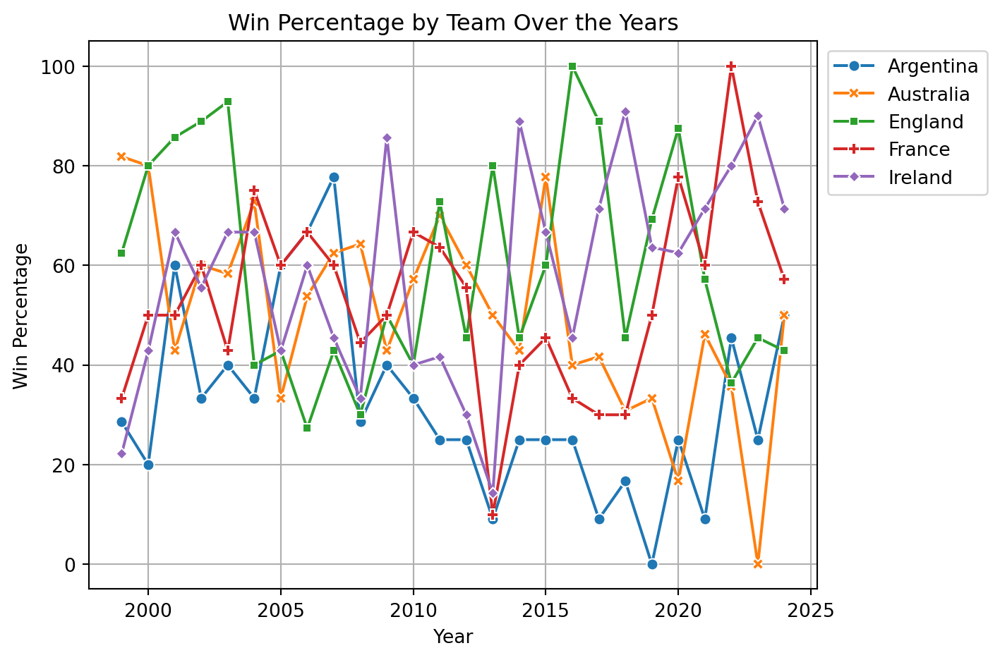
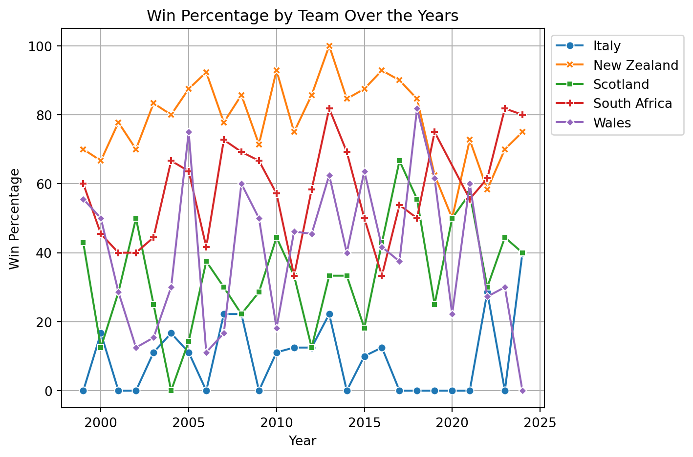
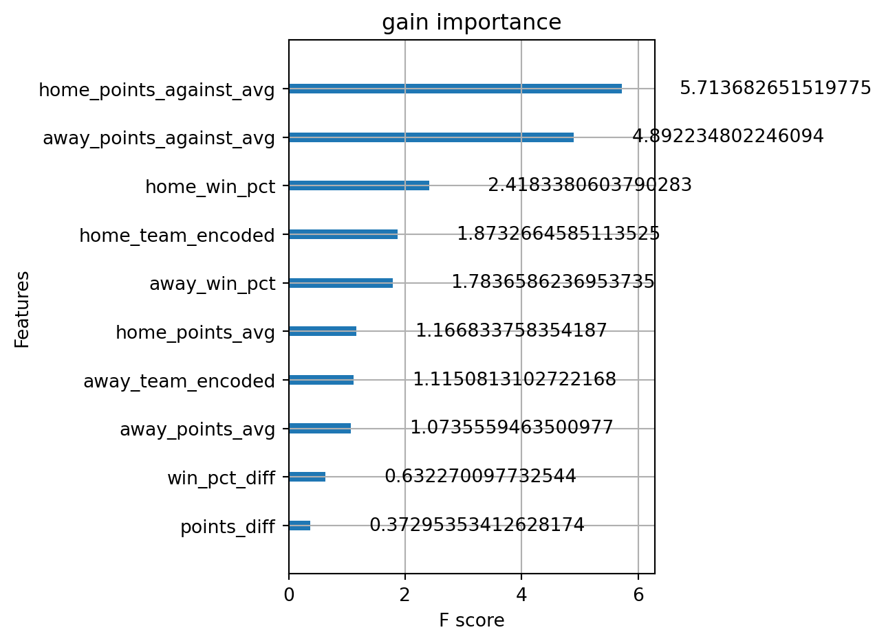
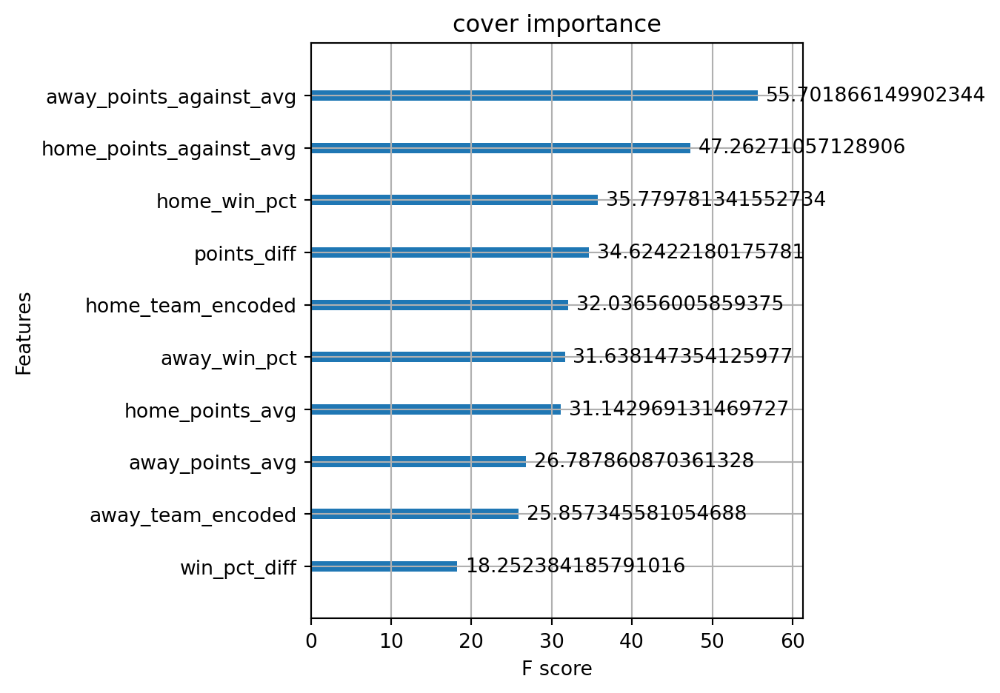

Model accuracy: 0.78
Balanced Accuracy: 0.5811479833126691final report
FINAL WRITTEN REPORT
Introduction
The Rugby World Cup (RWC) is the most prestigious tournament in men’s international rugby, held every four years and featuring the top-performing nations from around the globe. Since its inception in 1987, all winning teams have come from the group of tier-one rugby nations—those with well-established professional structures and a history of competitive success. The World Cup’s high stakes, unique pressure, and knockout format often produce different outcomes from regular international fixtures, yet the path to RWC success may still be written in a team’s performance leading up to the tournament.
This project seeks to bridge our understanding of regular international performance with World Cup outcomes through a predictive modeling lens. Our guiding research question is:
> Can regular fixture performance since 1999 reliably predict World Cup success for tier-one rugby nations?
We expect that teams with consistently high win rates, dominant scoring margins, and strong rankings (e.g., Elo ratings) leading into a World Cup are more likely to progress further or win the tournament. Based on our model, and consistent with historical trends, we predict that South Africa (RSA), Ireland (IRE), or New Zealand (NZ) are the most likely candidates to win the 2027 Rugby World Cup.
Data
Data Source and Collection
The data for this project was sourced from an international rugby match dataset containing results from test matches played by men’s national teams. The dataset includes 2,783 matches, of which 1,230 were retained after filtering for: - Matches played between 1999 and 2024, inclusive - Tier-one teams only - Complete match records (with no missing scores or team names)
Cases and Variables
Each row in the dataset represents a single international rugby match and includes variables such as: - date: Match date - home_team, away_team: Competing teams - home_score, away_score: Points scored by each team - competition: Type of match (e.g., World Cup, Six Nations, etc.) - neutral: Boolean indicator for neutral venue - world_cup: Boolean indicator for whether the match is a World Cup fixture
Data Wrangling and Feature Engineering
To support our analysis, we created several new variables and tidied the dataset: - Extracted year from the match date for time-series analysis - Created binary indicators: homeWin and awayWin - Calculated count to aid in aggregating match totals - Grouped matches by team to calculate: - Home and away win percentages - Average points scored and conceded (home and away) - World Cup vs. regular fixture performance - Developed year-by-year win percentage timelines for each team
Variables for Modeling
We plan to include the following variables in our predictive models: - Win Percentage (last 2 years before RWC): Measures recent performance - Average Point Differential: Offensive and defensive strength indicator - Elo Rating (if included or computed): Captures opponent-adjusted team strength - Tournament Flag: Helps compare regular matches to World Cup fixtures - Home/Away Advantage: Quantified through win rates and score differentials
These variables were chosen for their interpretability and demonstrated relevance in differentiating strong and weak tournament performers.
Methodology
Research Question
Our goal is to explore whether consistent performance in international fixtures since 1999 can predict a team’s success at the Rugby World Cup (RWC). We focus on tier-one nations, and based on trends in both regular and tournament data, we aim to forecast the winner of the 2027 RWC. Our preliminary model predicts that South Africa, Ireland, or New Zealand are the most likely champions.
Data Overview and Cleaning
We used a dataset containing 2,783 international matches, which was filtered to: - Matches after 1998, yielding 1,230 matches. - Tier-one teams only, excluding matches with insufficient data or unclear team tier.
Cleaning Steps: - Extracted year from match dates for temporal analysis. - Created binary flags for homeWin and awayWin. - Dropped rows with missing values. - Created a “count” variable to aggregate matches played per team.
Feature Engineering and Wrangling
We created several new variables from existing match data: - Home/Away Win Percentages: Calculated by aggregating match results per team. - Average Points Scored and Conceded: For both World Cup and non-World Cup matches. - World Cup Match Flag: To compare regular vs. tournament performance. - Yearly Win Percentage: A normalized view of performance over time per team.
Code implementation used pandas and NumPy, with seaborn and matplotlib for plotting.
Exclusions
We excluded: - All matches involving non-tier-one nations. - Matches with missing scores or unclear venues. - Non-competitive matches that could skew performance metrics (e.g., experimental squads).
Summary Statistics
| Variable | Mean | Std Dev | Min | Max |
|---|---|---|---|---|
| Home Score | 25.07 | 13.15 | 0 | 101 |
| Away Score | 20.78 | 11.38 | 0 | 68 |
| Home Win Rate | 59.6% | — | 0 | 1 |
| Away Win Rate | 38.4% | — | 0 | 1 |
| Year | 2011.5 | 7.2 | 1999 | 2024 |
Observation:
On average, the home team outperforms the away team by ~4.3 points. The home win rate is significantly higher across all teams.
| ### Key Visualizations |
1. Home and Away Win Rates by Team  |
| ::: {#c7127b19 .cell execution_count=1} |
| ::: {.cell-output .cell-output-display execution_count=21} |
| We can observe that the mean points scored by the home team was approximately 4.2 higher than the away team. All major quadrants have higher points for home_score than away_score, and the std is also greater. |
| We also notice that the home team won ~59.6%* of the games contested. |
| *This does not account for games that take place in neutral venues. |
| ::: {#5c737a6b .cell execution_count=4} |
| ::: {.cell-output .cell-output-display execution_count=24} |
| ```{=html} |
| .dataframe tbody tr th { vertical-align: top; } |
| .dataframe thead th { text-align: right; } |
| ::: ::: |
| This data frame represents the team wise performance breakdown from 1999-2024. |
| ::: {#09417bb9 .cell execution_count=5} |
| ::: {.cell-output .cell-output-display}  ::: ::: |
| - New Zealand dominates both at home and away. - All teams perform better at home, confirming home advantage. - Italy underperforms consistently. |
| 2. Average Points Scored vs. Conceded - Teams like New Zealand and South Africa show high scores with low concession. - Italy and Scotland concede more than they score, especially in away games. |
| ::: {#62d12b37 .cell execution_count=7} |
::: {.cell-output .cell-output-display}  ::: ::: ::: ::: |
| 3. World Cup vs. Regular Match Comparison - Ireland and South Africa maintain strong performance in both contexts. - Some teams drop significantly in performance during World Cups, revealing tournament pressure or lack of depth. |
| ::: {#9a341081 .cell execution_count=9} |
| ::: {.cell-output .cell-output-display}  ::: ::: |
| 4. Year-wise Win Percentage Trends - Shows consistency and peaks for contenders like NZ, RSA, and IRE. - Allows modeling team form trajectory over time. |
| ::: {#723352f8 .cell execution_count=11} |
| ::: {.cell-output .cell-output-display}  ::: ::: |
| Since this plot is chaotic, I will cut down on the number of countries plotted. 2 plots with 5 countries on each. |
| ::: {#35a5aeaf .cell execution_count=12} |
| ::: {.cell-output .cell-output-display execution_count=32} |
| ::: {#3877aa02 .cell execution_count=13} |
| ::: {.cell-output .cell-output-display}  ::: ::: |
| In this breakdown of ARG, AUS, ENG, FRA, and IRE we can see that Australia starts out really strong at the turn of the millennium and slowly starts to regress. 2023 saw them experience their worst year with no wins to show for. IRE and FRA have been the two teams that continue to improve on average. ENG and ARG are the two wildcard teams that can be either really good or really bad; they are wildly unpredictable. |
| ::: {#450fb30c .cell execution_count=14} |
| ::: {.cell-output .cell-output-display}  ::: ::: |
Modeling Approach
XGBoost CLassifier with Monte Carlo Simulations
XGBoost (Extreme Gradient Boosting) is a highly efficient and scalable machine learning algorithm, especially for structured/tabular data. Its advantages include:
High Predictive Accuracy: Often outperforms other algorithms (like logistic regression, random forests, or neural networks) on structured datasets.
Handles Non-Linearity & Complex Relationships: Captures intricate patterns in data that simpler models might miss.
Feature Importance: Provides insights into which variables most influence predictions.
Robust to Overfitting: Includes regularization (L1/L2) and early stopping.
Works Well with Imbalanced Data: Can handle classification tasks where one class is rare (e.g., fraud detection).
Monte Carlo (MC) simulations are used to model uncertainty and probabilistic outcomes by running thousands of random simulations. When combined with XGBoost, they help:
Quantify Uncertainty: XGBoost gives a point prediction (e.g., probability of an event), but MC can simulate how reliable that prediction is under varying conditions.
Risk Assessment: If inputs have randomness (e.g., stock prices, sensor noise), MC can propagate this uncertainty through the XGBoost model.
Sensitivity Analysis: Test how small changes in input variables affect the output (e.g., “What if Feature X varies by ±10%?”).
Decision-Making Under Uncertainty: Useful in finance (portfolio risk), healthcare (treatment outcomes), or engineering (system failures).
Full Model Performance
Predicted 2027 Rugby World Cup Win Probabilities:
New Zealand: 16.9%
France: 13.7%
England: 13.6%
Australia: 10.9%
South Africa: 10.5%
Ireland: 9.5%
Wales: 8.5%
Scotland: 7.7%
Argentina: 6.5%
Italy: 2.2%XGBoost provides these importance types by default:
weight: The number of times a feature appears in a tree
gain: The average gain of splits which use the feature
cover: The average coverage of splits which use the feature
weight importance:
{'home_team_encoded': 1681.0, 'away_team_encoded': 1984.0, 'home_win_pct': 1142.0, 'away_win_pct': 1326.0, 'home_points_avg': 125.0, 'away_points_avg': 281.0, 'home_points_against_avg': 192.0, 'away_points_against_avg': 141.0, 'win_pct_diff': 632.0, 'points_diff': 221.0}
gain importance:
{'home_team_encoded': 1.8732664585113525, 'away_team_encoded': 1.1150813102722168, 'home_win_pct': 2.4183380603790283, 'away_win_pct': 1.7836586236953735, 'home_points_avg': 1.166833758354187, 'away_points_avg': 1.0735559463500977, 'home_points_against_avg': 5.713682651519775, 'away_points_against_avg': 4.892234802246094, 'win_pct_diff': 0.632270097732544, 'points_diff': 0.37295353412628174}
cover importance:
{'home_team_encoded': 32.03656005859375, 'away_team_encoded': 25.857345581054688, 'home_win_pct': 35.779781341552734, 'away_win_pct': 31.638147354125977, 'home_points_avg': 31.142969131469727, 'away_points_avg': 26.787860870361328, 'home_points_against_avg': 47.26271057128906, 'away_points_against_avg': 55.701866149902344, 'win_pct_diff': 18.252384185791016, 'points_diff': 34.62422180175781}
Weight is the number of times that feature appears in a tree Interpretation
- win_pct_diff was used in 632 splits across all trees.
This is simple and easy to compute but it doesn’t account for the overall impact towards the model performance. The number of times a feature appears does not explain how much the model improves by.
Gain is the average improvement in the model accuracy (Gini impurity for classification) Interpretation
- A gain of 1.78 means away_win_pct, on average, improves class separation by 1.78 units per split.
Directly measures feature usefulness, but it can be biased toward continuous features (they often allow more fine-grained splits).
Cover is the average number of samples impacted by splits using a feature Interpretation
- win_pct_diff 18.25238 means splits using this feature affect ~18.25238 samples on average.
Cover helps detect broadly influential features, but it doesn’t directly measure predictive power.
Refined Model accuracy: 0.77
Balanced Accuracy: 0.5781176802823662We can see that the model performs almost identically to the one from before. Since it is simpler and the performance is nearly identical, we will go ahead and perform cross validation to find optimal hyper-parameters.
Best params: {'learning_rate': 0.01, 'max_depth': 5, 'n_estimators': 50}XGBClassifier(base_score=None, booster=None, callbacks=None,
colsample_bylevel=None, colsample_bynode=None,
colsample_bytree=None, device=None, early_stopping_rounds=None,
enable_categorical=False, eval_metric=None, feature_types=None,
gamma=None, grow_policy=None, importance_type=None,
interaction_constraints=None, learning_rate=0.01, max_bin=None,
max_cat_threshold=None, max_cat_to_onehot=None,
max_delta_step=None, max_depth=5, max_leaves=None,
min_child_weight=None, missing=nan, monotone_constraints=None,
multi_strategy=None, n_estimators=50, n_jobs=None, num_class=10,
num_parallel_tree=None, ...)
Optimized Model accuracy: 0.77
Balanced Accuracy: 0.5738474739748085The best params do not make much of a difference as the accuracy and balanced accuracy stayed pretty much the same.
Revised Monte Carlo Simulations definition with world cup stages
Running enhanced simulation...
Predicted 2027 Rugby World Cup Win Probabilities with Optimized Model:
England: 15.2%
South Africa: 11.3%
Australia: 10.9%
Argentina: 9.6%
Wales: 9.4%
Scotland: 9.3%
Italy: 8.8%
France: 8.7%
Ireland: 8.6%
New Zealand: 8.3%Interestingly, after creating a model that prioritizes the top features while avoiding comprimising performance, New Zealand now slips to 7th. This could be because of the way the features appear in the forest and how those features favor England.
Maybe the next steps could be uncovering the exact reasons as to this change.